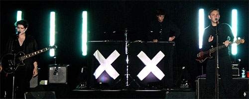

News
+ Beyonce Releases Surprise "Visual Album" |
|---|

Top Picks
|
|---|

Albums of 2013
|
|---|


The xx set to play 25 NYC shows for 40 people each
The xx have announced a March residency in New York City at the historic Park Avenue Armory's Wade Thompson Drill Hall. The group will play 25 shows from March 19-29, with two shows per night during the week and three per night on the weekend. Each set will allow for a capacity of only 40 people and tickets will cost $55.
The performances will be adapted from their Manchester residency this past summer in conjunction with Manchester International Festival. The Armory's website describes the residency:
"Defying perceptions of a traditional concert, the xx creates a site-specific environment to delve into uncharted levels of depth in their sound where dark and light collide as the memory of the outside world falls away. This uniquely voyeuristic and deeply personal setting is the perfect oasis for the band to perform, while in the process redefining their music and their relationship to the audience that surrounds them."